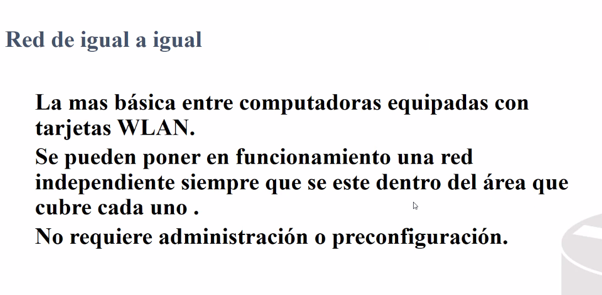

Se amplia la covertura pero se incrementa el cuello de botella.


A y G misma velocidad y diferentes frequencias. Al estar en diferentes frequencias no son compatibles.
Diferentes frequencias no son compatibles.
Se tienen estandares que operan en ambas frequencias.


La razon:
Si la potencia de distribucin es muy grande podria estar radiando hasta la calle.
Si puede accesar a la red por radiacion podria intentar hackearla.
La radiacion se disminuye con la potencia.
Elemtnos importantes de las redes inalambricas

Pro Tip:
Todos protegen la clave pero dependiendo de la empresa y suexperiencia podrian dejar deprevenidos los 3 primeros aspectos.
- Tener acceso a la red.
- Escuchar: Poner cosas para escuchar y ver que unformacion es util.